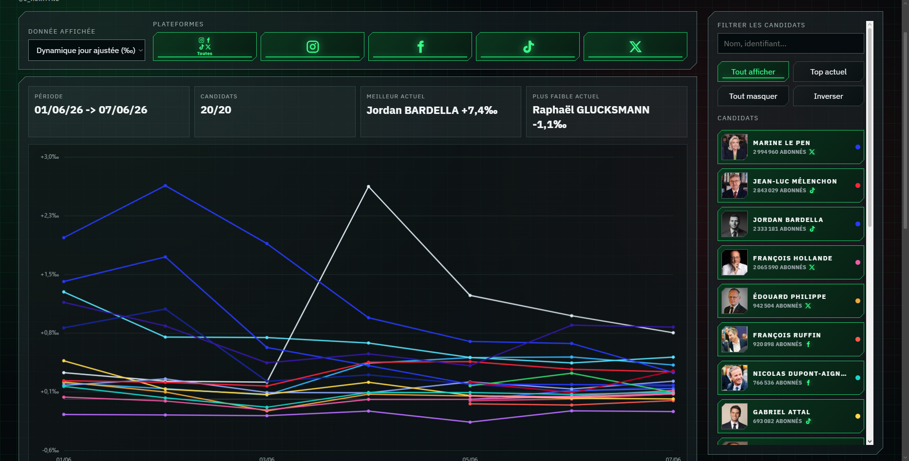

Baromètre des réseaux
Suivre les dynamiques politiques autrement.
Le point d'entrée vers le baromètre des réseaux, ses publications associées et sa méthodologie. Chaque jour, le baromètre suit l'évolution des abonnés des personnalités politiques sur Instagram, X, TikTok et Facebook, met en avant les dynamiques hebdomadaires et les signaux du jour, puis corrige les scores par plateforme pour éviter de comparer brutalement des audiences incomparables.

Dashboard interactif
Courbes, filtres, candidats et plateformes pour suivre les dynamiques en détail.
Actus
Dernières publications
Les derniers flux Instagram, Twitter / X et Discord, réunis au même endroit pour suivre les publications récentes sans quitter le portail.
Serveur Discord

Mes liens